This is the multi-page printable view of this section. Click here to print.
CVAT Analytics and QA in Cloud
1 - Automated QA, Review & Honeypot
In CVAT, it’s possible to evaluate the quality of annotation through the creation of a Ground truth job, referred to as a Honeypot. To estimate the task quality, CVAT compares all other jobs in the task against the established Ground truth job, and calculates annotation quality based on this comparison.
Note that quality estimation only supports 2d tasks. It supports all the annotation types except 2d cuboids.
Note that tracks are considered separate shapes and compared on a per-frame basis with other tracks and shapes.
See:
- Ground truth job
- Managing Ground Truth jobs: Import, Export, and Deletion
- Assessing data quality with Ground truth jobs
- Annotation quality & Honeypot video tutorial
Ground truth job
A Ground truth job is a way to tell CVAT where to store and get the “correct” annotations for task quality estimation.
To estimate task quality, you need to create a Ground truth job in the task, and annotate it. You don’t need to annotate the whole dataset twice, the annotation quality of a small part of the data shows the quality of annotation for the whole dataset.
For the quality assurance to function correctly, the Ground truth job must have a small portion of the task frames and the frames must be chosen randomly. Depending on the dataset size and task complexity, 5-15% of the data is typically good enough for quality estimation, while keeping extra annotation overhead acceptable.
For example, in a typical task with 2000 frames, selecting just 5%, which is 100 extra frames to annotate, is enough to estimate the annotation quality. If the task contains only 30 frames, it’s advisable to select 8-10 frames, which is about 30%.
It is more than 15% but in the case of smaller datasets, we need more samples to estimate quality reliably.
To create a Ground truth job, do the following:
-
Create a task, and open the task page.
-
Click +.
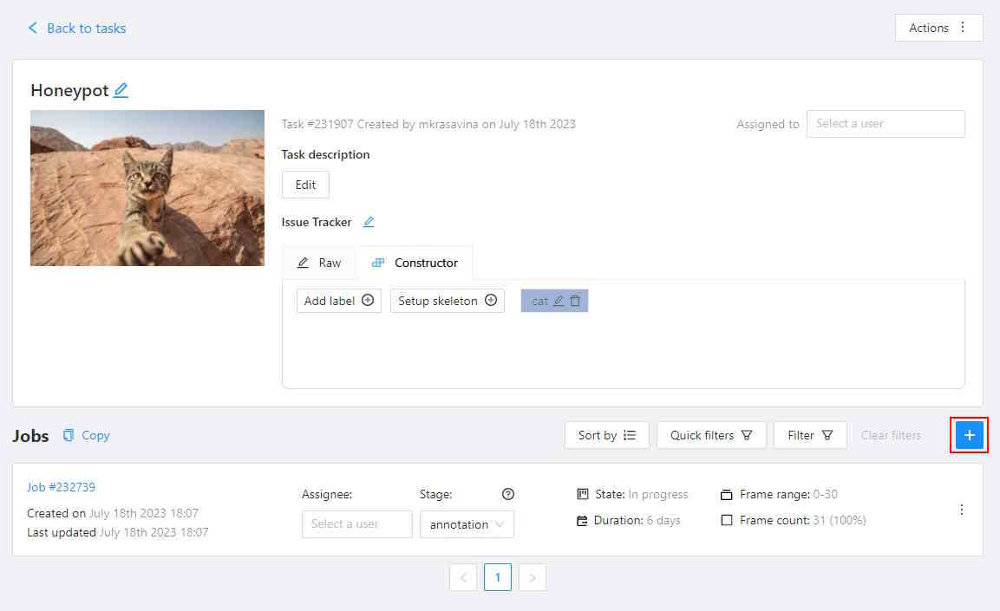
-
In the Add new job window, fill in the following fields:
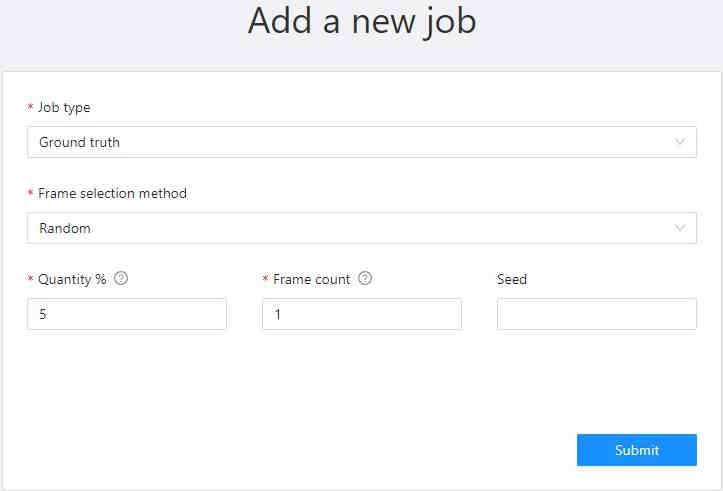
- Job type: Use the default parameter Ground truth.
- Frame selection method: Use the default parameter Random.
- Quantity %: Set the desired percentage of frames for the Ground truth job.
Note that when you use Quantity %, the Frames field will be autofilled. - Frame count: Set the desired number of frames for the “ground truth” job.
Note that when you use Frames, the Quantity % field will be will be autofilled. - Seed: (Optional) If you need to make the random selection reproducible, specify this number.
It can be any integer number, the same value will yield the same random selection (given that the
frame number is unchanged).
Note that if you want to use a custom frame sequence, you can do this using the server API instead, see Jobs API #create.
-
Click Submit.
-
Annotate frames, save your work.
-
Change the status of the job to Completed.
-
Change Stage to Accepted.
The Ground truth job will appear in the jobs list.

Managing Ground Truth jobs: Import, Export, and Deletion
Annotations from Ground truth jobs are not included in the dataset export, they also cannot be imported during task annotations import or with automatic annotation for the task.
Import, export, and delete options are available from the job’s menu.
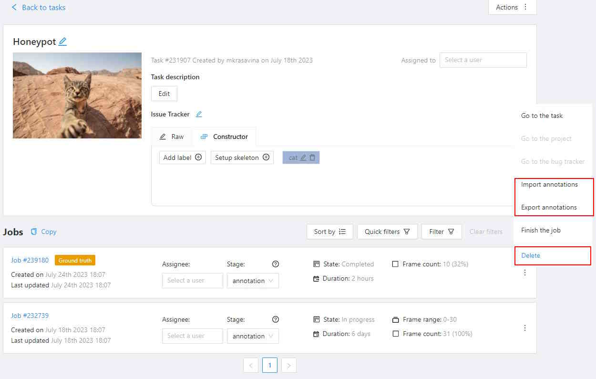
Import
If you want to import annotations into the Ground truth job, do the following.
- Open the task, and find the Ground truth job in the jobs list.
- Click on three dots to open the menu.
- From the menu, select Import annotations.
- Select import format, and select file.
- Click OK.
Note that if there are imported annotations for the frames that exist in the task, but are not included in the Ground truth job, they will be ignored. This way, you don’t need to worry about “cleaning up” your Ground truth annotations for the whole dataset before importing them. Importing annotations for the frames that are not known in the task still raises errors.
Export
To export annotations from the Ground truth job, do the following.
- Open the task, and find a job in the jobs list.
- Click on three dots to open the menu.
- From the menu, select Export annotations.
Delete
To delete the Ground truth job, do the following.
- Open the task, and find the Ground truth job in the jobs list.
- Click on three dots to open the menu.
- From the menu, select Delete.
Assessing data quality with Ground truth jobs
Once you’ve established the Ground truth job, proceed to annotate the dataset.
CVAT will begin the quality comparison between the annotated task and the
Ground truth job in this task once it is finished (on the acceptance stage and in the completed state).
Note that the process of quality calculation may take up to several hours, depending on the amount of data and labeled objects, and is not updated immediately after task updates.
To view results go to the Task > Actions > View analytics> Performance tab.

Quality data
The Analytics page has the following fields:
| Field | Description |
|---|---|
| Mean annotation quality | Displays the average quality of annotations, which includes: the count of accurate annotations, total task annotations, ground truth annotations, accuracy rate, precision rate, and recall rate. |
| GT Conflicts | Conflicts identified during quality assessment, including extra or missing annotations. Mouse over the ? icon for a detailed conflict report on your dataset. |
| Issues | Number of opened issues. If no issues were reported, will show 0. |
| Quality report | Quality report in JSON format. |
| Ground truth job data | “Information about ground truth job, including date, time, and number of issues. |
| List of jobs | List of all the jobs in the task |
Annotation quality settings
If you need to tweak some aspects of comparisons, you can do this from the Annotation Quality Settings menu.
You can configure what overlap should be considered low or how annotations must be compared.
The updated settings will take effect on the next quality update.
To open Annotation Quality Settings, find Quality report and on the right side of it, click on three dots.
The following window will open. Hover over the ? marks to understand what each field represents.

Annotation quality settings have the following parameters:
| Field | Description |
|---|---|
| Min overlap threshold | Min overlap threshold(IoU) is used for the distinction between matched / unmatched shapes. |
| Low overlap threshold | Low overlap threshold is used for the distinction between strong/weak (low overlap) matches. |
| OKS Sigma | IoU threshold for points. The percent of the box area, used as the radius of the circle around the GT point, where the checked point is expected to be. |
| Relative thickness (frame side %) | Thickness of polylines, relative to the (image area) ^ 0.5. The distance to the boundary around the GT line inside of which the checked line points should be. |
| Check orientation | Indicates that polylines have direction. |
| Min similarity gain (%) | The minimal gain in the GT IoU between the given and reversed line directions to consider the line inverted. Only useful with the Check orientation parameter. |
| Compare groups | Enables or disables annotation group checks. |
| Min group match threshold | Minimal IoU for groups to be considered matching, used when the Compare groups are enabled. |
| Check object visibility | Check for partially-covered annotations. Masks and polygons will be compared to each other. |
| Min visibility threshold | Minimal visible area percent of the spatial annotations (polygons, masks). For reporting covered annotations, useful with the Check object visibility option. |
| Match only visible parts | Use only the visible part of the masks and polygons in comparisons. |
GT conflicts in the CVAT interface
To see GT Conflicts in the CVAT interface, go to Review > Issues > Show ground truth annotations and conflicts.

The ground truth (GT) annotation is depicted as a dotted-line box with an associated label.
Upon hovering over an issue on the right-side panel with your mouse, the corresponding GT Annotation gets highlighted.
Use arrows in the Issue toolbar to move between GT conflicts.
To create an issue related to the conflict, right-click on the bounding box and from the menu select the type of issue you want to create.
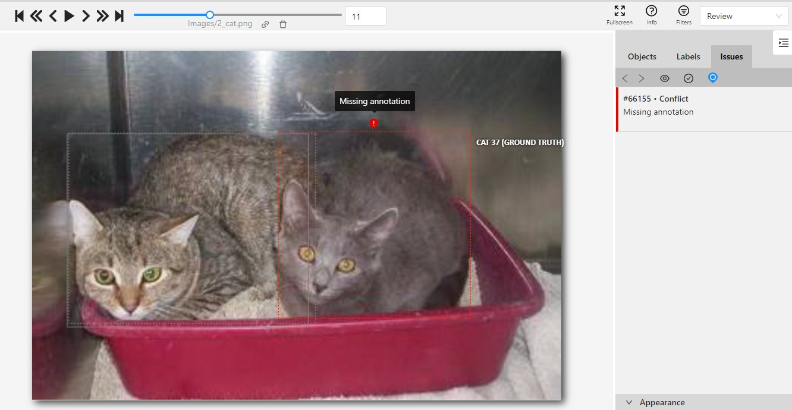
Annotation quality & Honeypot video tutorial
This video demonstrates the process:
2 - Manual QA and Review
In the demanding process of annotation, ensuring accuracy is paramount.
CVAT introduces a specialized Review mode, designed to streamline the validation of annotations by pinpointing errors or discrepancies in annotation.
Note: The Review mode is not applicable for 3D tasks.
See:
- Review and report issues: review only mode
- Review and report issues: review and correct mode
- Issues navigation and interface
- Manual QA complete video tutorial
Review and report issues: review only mode
Review mode is a user interface (UI) setting where a specialized Issue tool is available. This tool allows you to identify and describe issues with objects or areas within the frame.
Note: While in review mode, all other tools will be hidden.
Review mode screen looks like the following:
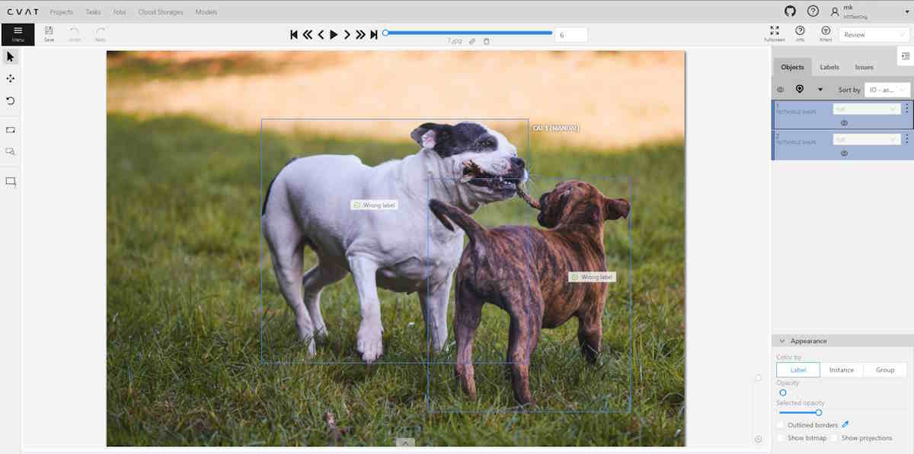
Assigning reviewer
Note: Reviewers can be assigned by project or task owner, assignee, and maintainer.
To assign a reviewer to the job, do the following:
-
Log in to the Owner or Maintainer account.
-
(Optional) If the person you wish to assign as a reviewer is not a member of Organization, you need to Invite this person to the Organization.
-
Click on the Assignee field and select the reviewer.
-
From the Stage drop-down list, select Validation.
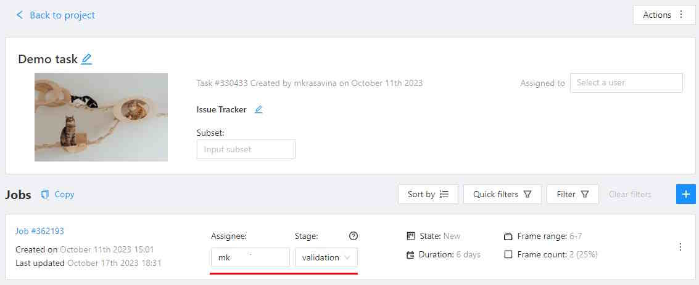
Reporting issues
To report an issue, do the following:
-
Log in to the reviewer’s account.
-
On the Controls sidebar, click Open and issue (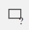).
-
Click on the area of the frame where the issue is occurring, and the Issue report popup will appear.
-
In the text field of the Issue report popup, enter the issue description.
-
Click Submit.
Quick issue
The Quick issue function streamlines the review process. It allows reviewers to efficiently select from a list of previously created issues or add a new one, facilitating a faster and more organized review.

To create a Quick issue do the following:
-
Right-click on the area of the frame where the issue is occurring.
-
From the popup menu select one of the following:
- Open an issue…: to create new issue.
- Quick issue: incorrect position: to report incorrect position of the label.
- Quick issue: incorrect attribute: to report incorrect attribute of the label.
- Quick issue…: to open the list of issues that were reported by you before.
Assigning corrector
Note: Only project owners and maintainers can assign reviewers.
To assign a corrector to the job, do the following:
-
Log in to the Owner or Maintainer account.
-
(Optional) If the person you wish to assign as a corrector is not a member of Organization, you need to Invite this person to the Organization.
-
Click on the Assignee field and select the reviewer.
-
From the Stage drop-down list, select Annotation.

Correcting reported issues
To correct the reported issue, do the following:
-
Log in to the corrector account.
-
Go to the reviewed job and open it.
-
Click on the issue report, to see details of what needs to be corrected.
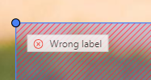
-
Correct annotation.
-
Add a comment to the issue report and click Resolve.

-
After all issues are fixed save work, go to the Menu select the Change the job state and change state to Complete.
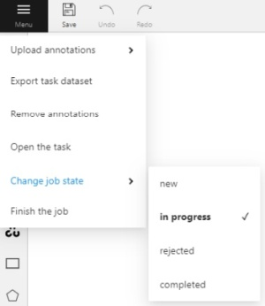
Review and report issues: review and correct mode
The person, assigned as assigned as reviewer can switch to correction mode and correct all annotation issues.
To correct annotation issues as a reviewer, do the following:
-
Log in to the reviewer account.
-
Go to the assigned job and open it.
-
In the top right corner, from the drop-down list, select Standard.

Issues navigation and interface
This section describes navigation, interface and comments section.
Issues tab
The created issue will appear on the Objects sidebar, in the Issues tab.

It has has the following elements:
| Element | Description |
|---|---|
| Arrows | You can switch between issues by clicking on arrows |
| Hide all issues | Click on the eye icon to hide all issues |
| Hide resolved issues | Click on the check mark to hide only resolved issues |
| Ground truth | Show ground truth annotations and objects |
Issues workspace
In the workspace, you can click on the issue, and add a comment on the issue, remove (Remove) it, or resolve (Resolve) it.
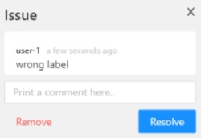
To reopen the resolved issue, click Reopen.
You can easily access multiple issues created in one location by hovering over an issue and scrolling the mouse wheel.
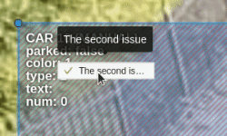
Issues comments
You can add as many comments as needed to the issue.
In the Objects toolbar, only the first and last comments will be displayed

You can copy and paste comments text.
Manual QA complete video tutorial
This video demonstrates the process:
3 - CVAT Team Performance & Monitoring
In CVAT Cloud, you can track a variety of metrics reflecting the team’s productivity and the pace of annotation with the Performance feature.
See:
Performance dashboard
To open the Performance dashboard, do the following:
- In the top menu click on Projects/ Tasks/ Jobs.
- Select an item from the list, and click on three dots (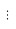).
- From the menu, select View analytics > Performance tab.

The following dashboard will open:
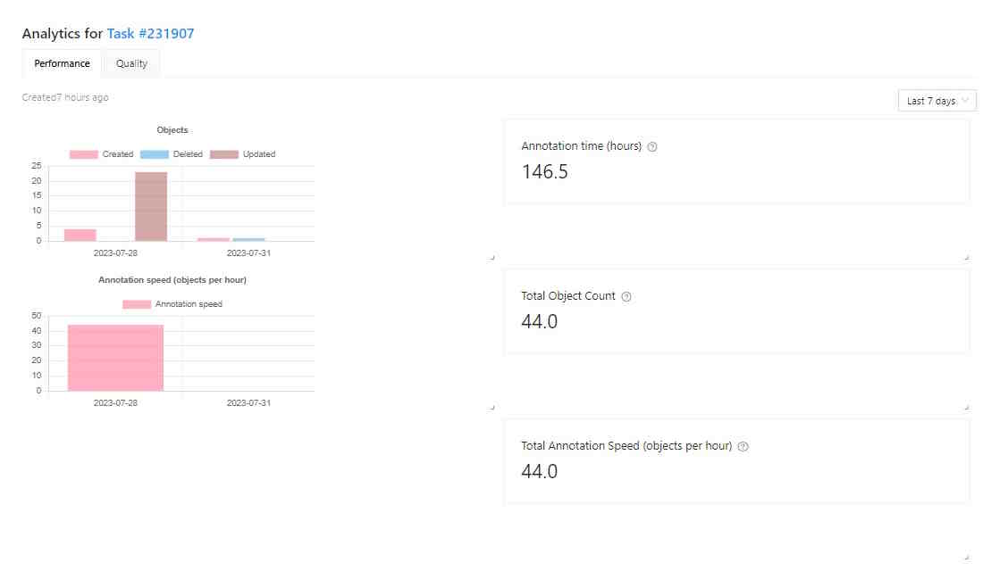
The Performance dashboard has the following elements:
| Element | Description |
|---|---|
| Analytics for | Object/ Task/ Job number. |
| Created | Time when the dashboard was updated last time. |
| Objects | Graph, showing the number of annotated, updated, and deleted objects by day. |
| Annotation speed (objects per hour) | Number of objects annotated per hour. |
| Time | A drop-down list with various periods for the graph. Currently affects only the histogram data. |
| Annotation time (hours) | Shows for how long the Project/Task/Job is in In progress state. |
| Total objects count | Shows the total objects count in the task. Interpolated objects are counted. |
| Total annotation speed (objects per hour) | Shows the annotation speed in the Project/Task/Job. Interpolated objects are counted. |
You can rearrange elements of the dashboard by dragging and dropping each of them.
Performance video tutorial
This video demonstrates the process: